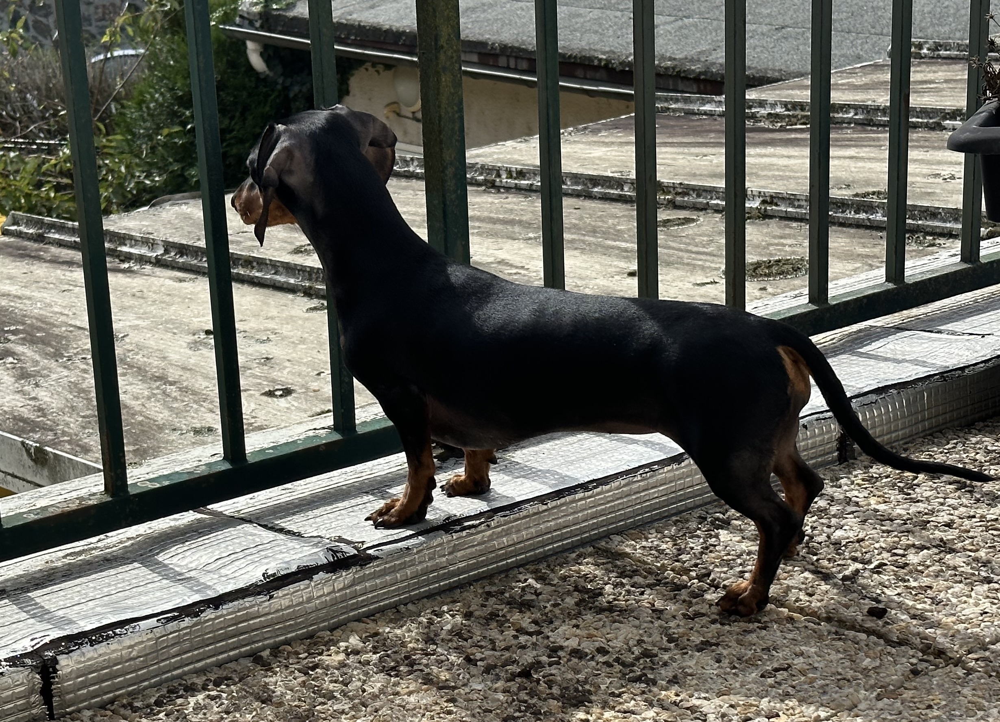
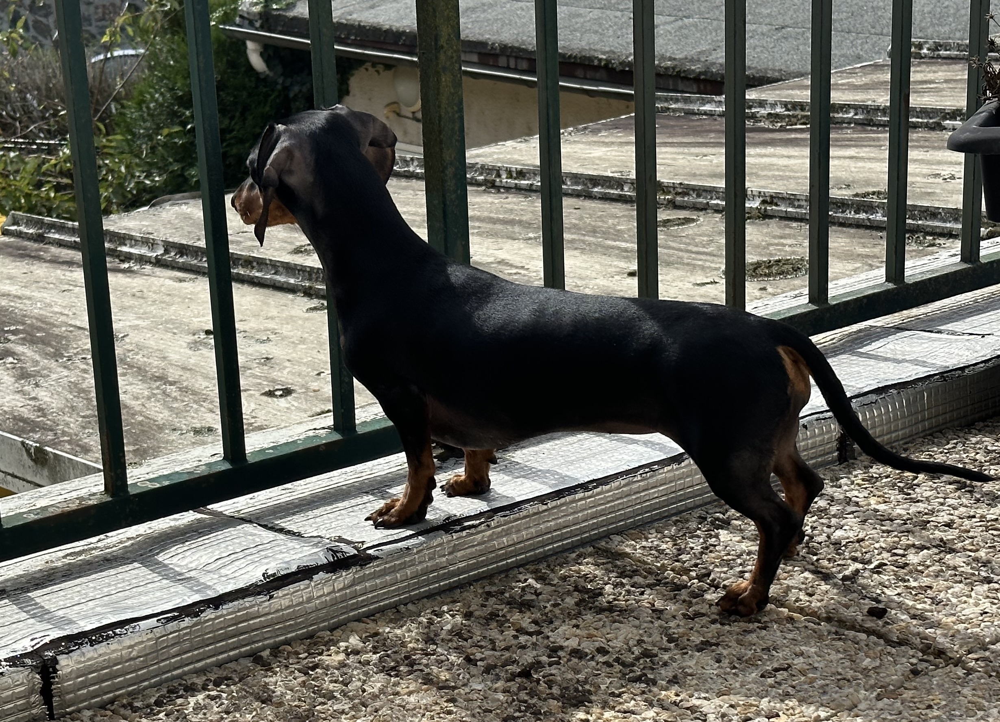
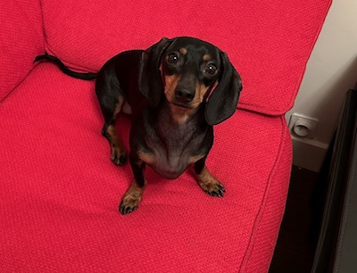
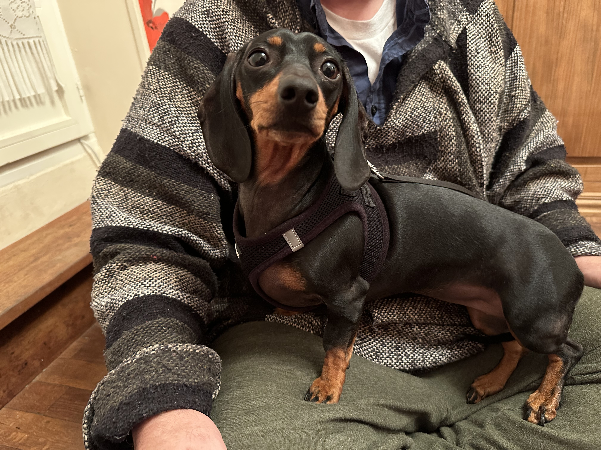
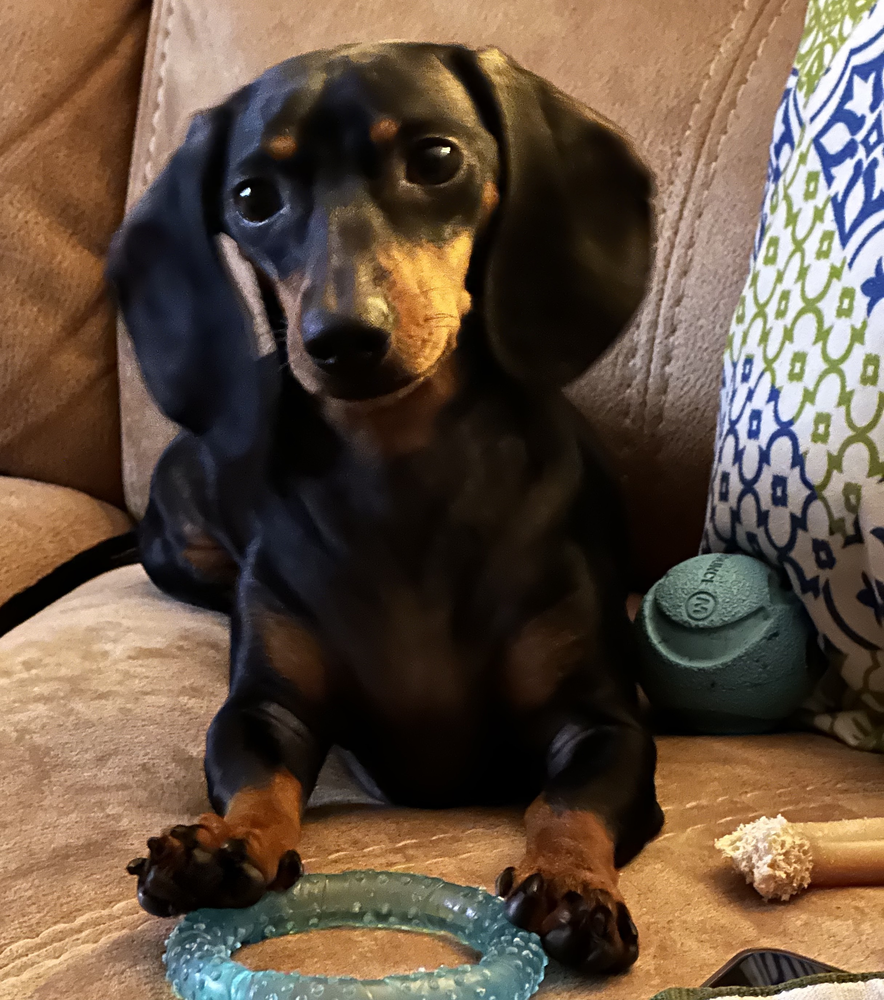
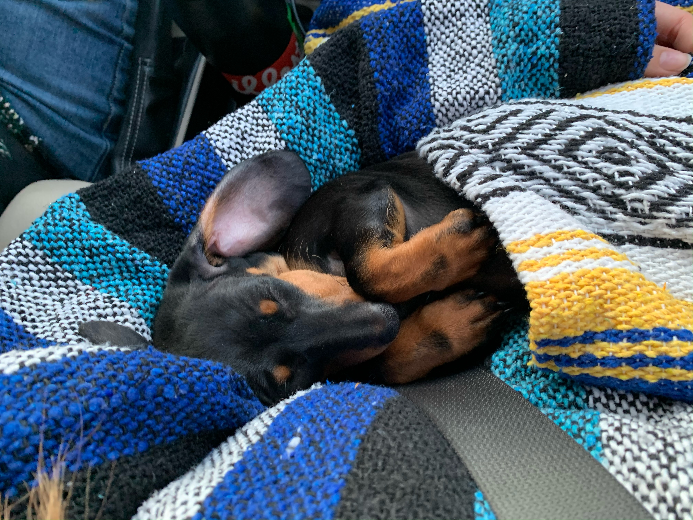
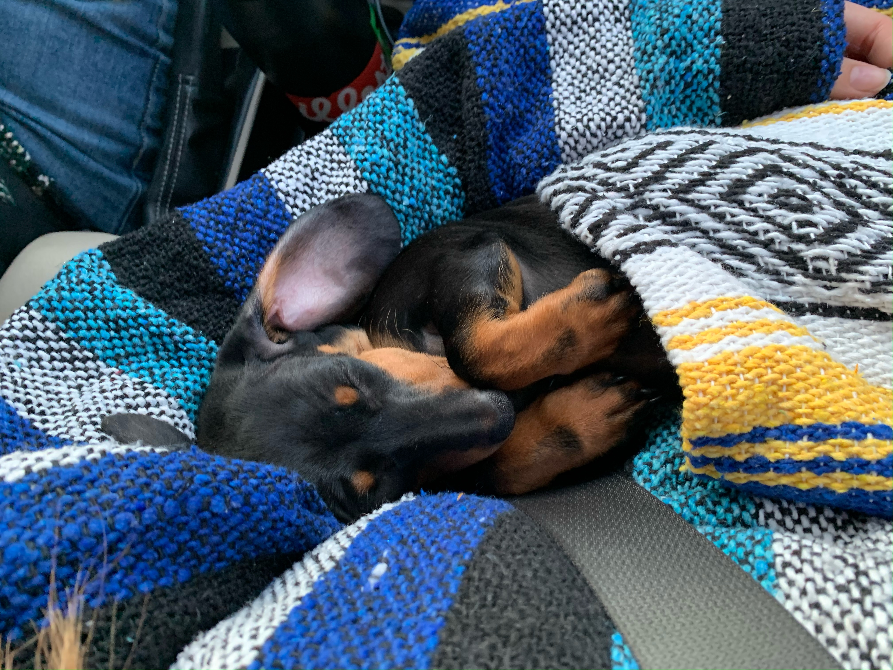

Overview
Purpose
My purpose with Les Petits Teckels is two-fold: 1)to create an informative site about Teckels to help people to better appreciate and understand their pets and 2) I would like to give tips on the proper care and feeding of Teckels along with examples from my own experience of simple, breed-specific accessories that can be made at home to improve the quality of life and provide safer mobility for these wonderful dogs.
Audience
Dog owners, specifically Teckel owners, and those thinking of getting a Teckel as a family pet or hunting dog.
Branding
Website Logo

Style Guide
Color Palette
Palette URL: https://coolors.co/540b0e-fff3b0-bc6c25-000411| Primary | Secondary | Accent 1 | Accent 2 |
|---|---|---|---|
| #000411 | #540B0E | #FFF3B0 | #BC6C25 |
Typography
Heading Font: "BioRhyme", "Display"
Paragraph Font: "Manrope", "sans-serif"
Normal paragraph example
Welcome to the world of Teckels. These wonderful dogs are the perfect family pet. They are loyal, loving, and smart dogs. Dog owners want to be well informed on how to care for their pets. On this website you will learn which breed specific problems Teckels are prone to and how to mitigate them. Ever wonder why your pet won't eat? Join our community where you can share news about your pet and read other Teckel owners' experiences. Check out our gallery of Teckel accessories, and find patterns and directions for making things your pet will love.
Colored paragraph example
Navigation
Site Map
Content
All About Teckels
This little german working dog is bursting with personality. Teckels are cute,loveable,friendly dogs. They are also good around kids. Alert and loyal, these dogs are adaptive, yet wary of strangers. Teckels are a breed of working dog that in addition to being the perfect family pet, help their humans in many useful ways. Originally a dog bred for hunting in Germany, Teckels are more than capable of keeping those pesky weasels on your farm in check. Teckels specialize in flushing out and hunting badgers, rabbits, and other ground burrowing animals. Dachshund, another German name for the Teckel, means “badger dog”. Today this unique heritage is what gives Teckels their distinctive bark and thick tail. A hunter’s best friend, they are great diggers and love to chase game. The Teckel's strong slim body, short legs, and barrel chest makes for a fast and fearless hunting dog. Enthusiasm for the hunt can get them in trouble sometimes. Teckels can get stuck in underground burrows while flushing out game. Hunters and farmers safely retrieve this little helper with a painless tug on the Teckel’s strong tail; a feature that was bred into the dog for just such a purpose. Teckels are great watchdogs. No need for a smart home when you have a Teckel around! Teckels will let you know when someone is approaching your door before your doorbell knows. The excellent hearing and sensitive nose of the Teckel give them the tools they need to bolster your home security system. Equipped with a sharp bark, Teckels can give their owners a heads up when there is anything out of the norm in their environment.
Images for the Home page

 

Caring for Teckels
According to the United States National Center for Biotechnology Information, Teckels are a breed of dog whose dwarfism is caused by simultaneous inheritance of two retrogenes. These genes tell the body to stop growth in the legs when the dog is still a puppy. The Teckel's unique body shape is perfect for the work they love and were bred to do. However, if the dogs are not working dogs, they may not build enough muscle mass to protect their backs. Dogs that are out of shape can be prone to herniated discs, Intervertebral Disc Disease, and other spinal problems. Most Teckel owners don't live on farms or in the country, so how can Teckels get enough exercise to lessen the severity of these painful problems? Activities Teckels should avoid: * Jumping down from furniture * Climbing and descending stairs * Full out sprinting when running * Tug of War type of play Things that can help: * Always use a harness collar instead of a traditional neck collar to attach the leash. * Crate your pet for short amounts of time when you cannot supervise their activity. * Place pet ramps leading up to and away from furniture. * Carry your pet up and down stairs. * Pay close attention to your Teckel's diet.
Images for the Page 2
  Teckel Crafts & Photos
Teckels need ramps to prevent them from hurting their spines by jumping on and off of furniture. Ramps are easy and affordable to make. Try following these directions to make a simple ramp for your pet. Materials: * PVC pipe or other hollow, rigid material such as bamboo * many slim dowels cut to the same length * length of narrow elastic * drill and bit the same radius as the dowels Directions: Step 1: Measure. Decide where you want to use the ramp and get measurements for height, depth, and angle. Step 2: Drill a channel to put the dowels into on the inside edge of the two pvc pipes that will form the edges of the ramp. Step 3: Insert all the dowels into the channel. Step 4: Cut four pvc pipes that will form the collapsible base. Two should be of height measurement, and two of depth. Step 5: Thread the elastic through all the pvc pipes forming a triangle and tie knots in the end. Once the elastic is threaded, the pipes for the base should act like segments in a collapsible walking cane. Stretch the elastic to fold and collapse them, then stretch it again to set them upright. They should brace against eachother to form a sturdy ramp. If you do not need the ramp to be collapsible, consider using pvc joints to help you construct the base. This Teckel Tent is the perfect place for your sleepy pet. Materials: * 6 wooden dowels of 36 inches length * At least 3 ft. length of flexible tubing at least twice the diameter of the dowels. * Darning Needle * Twine * Velcro strips or dots * Large piece of Posterboard * One large piece of apholstery foam (at least a yard), of at least 2 inch thickness. * Quilt Batting * 2 yards sturdy fabric for the exterior of the base, such as canvas. * 2 yards Decorative fabric. * 2 yards Fuzzy fabric, such as sherpa, faux fur, or any napped or piled fabric. * Thread that gives a good contrast to the decorative fabric. * A sewing machine and sewing equipment. Directions: Step 1: Measure. Measure your pet, add a few inches for ease of movement. Step 2: Draw a line the length of the measurement on your posterboard. Use this as the diameter of the interior circle of the pet bed. Step 3: Put your posterboard pattern on top of the fuzzy fabric and measure 6 inches out. Draw another circle using this measurement, and cut your fabric. Step 4: Put the posterboard pattern on top of the sturdy fabric. Measure 8 inches out. Continue as in Step 3. Step 5: Put the pattern on top of the apholstery foam and cut out a foam circle. Step 5: Cut 4 in x 2 in strips of foam from the left over, until you have a total of at least 36 inches. Wrap it around the outside of the posterboard circle and leave a bit of an overlap. Cut off the extra. If your foam is in several pieces just use your darning needle and twine to hand stitch it into a circle securing your stitching with good knots. Step 6: Put your fuzzy and sturdy fabrics right sides together and pin together for half the circle. Fit it to the foam and make any adjustments that are necessary. Pin the circle 3/4 of the way. Remove the foam and leaving at least a 1/4 seam allowance, sew where you have pinned. Turn the fabric right sides out and put the foam base in. Hem the open edge and attach the velcro to completely close it. Step 7: Use the same concept of sewing an inner circle to complete the pet pillow case, stuff it with batting and then use velcro to close it. Step 8: Using the pet bed as a template, wrap the tubing around the same way we did the foam. Trim the excess and stitch or glue together the ends after fitting them one into the other. Step 9: Secure the dowels into the tubing after first testing them in place to make sure you know where you want them, and lash them together at the top with twine. Step 10: Wrap the decorative fabric around the tent skeleton to measure. Trim the excess and use your sewing machine to finish the edge. Step 11: Place velcro on the dowels and corresponding places on the decorative fabric to secure it to the dowels. You're done!! Your pet will thank you for their new Teckel Tent!!
Images for the Page 3
 


Wireframes
Create three wireframes for your site. One for each page and list them here
Home
I think the wireframe is pretty straight forward.


Care
Wirefram is pretty clear I think.


Gallery
[Any additional details about page 3 that the wireframe does not make clear]